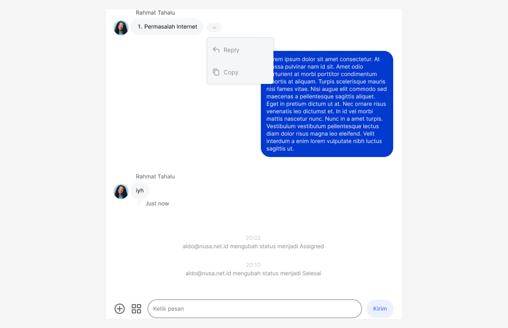

Designing chat features and context for chat bubbles such as reply, delete.
Visit Figma
The Nusacontact website is a product used by the IT helpdesk of PT Media Antar Nusa to assist in handling customer issues. The website is still in development stage, unfortunately, I am unable to provide access to its Figma link, but I will show the design that I have worked on.
The Problem
The Nusacontact chat bubble feature is set to be enhanced, with the Nusacontact team intending to add a contextual feature for reply, copy, and download to text bubbles. This addition aims to facilitate users when replying to text containing images, PDFs, or locations.
Role & Responbility
As a Product Designer, I design the contextual feature and chat interface when the chat is given actions like reply, copy and download.
Final Result
Wireframe
First, I created wireframes inspired by the contextual features of the WhatsApp application.
Mockups & Prototypes
After creating the wireframe, I proceeded to create mockups for the 'context' feature in NusaContact's chat bubbles
Reply chat image
Replay chat with pdf